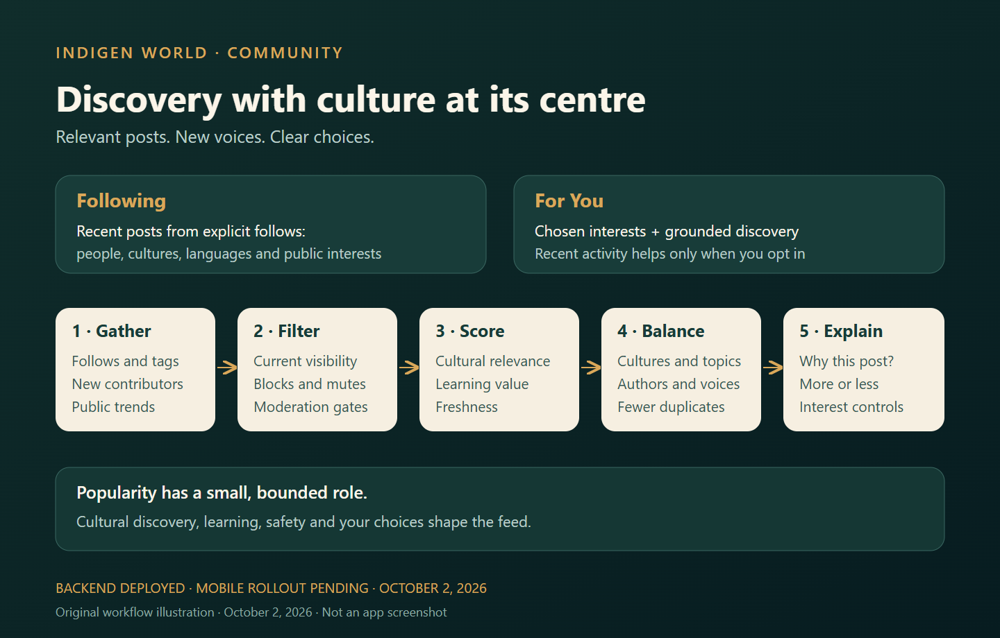

Development preview: the Community recommendation backend was deployed and its APIs verified on October 2, 2026. The mobile recommendation feature has not been released and remains disabled by default.
Indigen World brings people together through cultural stories, language learning, questions, music and shared knowledge. We have built a recommendation pipeline that helps readers find relevant public posts while making room for unfamiliar cultures and emerging voices.

Following prioritizes recent posts and reshares from people and public interests you explicitly follow. Cultural, language, topic and public-community selections count as follows. The feed retrieves a bounded recent selection.
For You combines those choices with recent public posts, reviewed learning content, editorial selections, emerging contributors and a small public trending pool. Cultural discovery can connect an unfamiliar culture to a subject you already enjoy. Large engagement counts have a limited influence on ranking.
In builds where recommendations are enabled, open Community and use the feed interests control to choose cultures, languages and subjects. Enable Personalize from my activity if you want recent likes, saved posts, replies, reshares and supported recommendation events to help suggest related posts. It is off by default. Inferred interests affect For You; they do not add follows to Following.
Recommendation events have a 30-day expiry policy. Turning personalization off stops new event collection and the use of behavioral features. Country relevance uses only countries you enter and explicitly permit; it does not use device location. Search history is not collected for this feed.
Recommendation explanations show the strongest relevant reason, such as a cultural follow or interaction with similar posts. Use the post menu to ask for more or less, choose Not interested, mute a topic or mute an account. Existing follow, unfollow, block and report controls continue to apply.
For You limits repeated authors and the concentration of a named topic, culture or public community. It suppresses duplicate posts and makes room for learning content and emerging contributors when suitable posts exist. These rules can produce a shorter feed when eligible content is limited.
Trending uses a bounded sample of distinct public participants. Private bookmarks and watch histories never enter public trends. Reported posts are hidden for the reporting reader, while reviewed harmful posts can be limited or excluded from recommendations. Automated detection of every form of harmful content is not part of this preview.
The backend functions, rules and indexes are deployed. Local backend and mobile tests passed, and an isolated production account verified the feed APIs, consent controls and feedback. Actual app checks, device testing, load testing and rollout review still need to happen before the feature is enabled in a released app. Future work includes richer cultural taxonomy, privacy-preserving similar-reader recommendations, accurate viewing instrumentation and models trained on sufficient consented data.
The aim is a Community that supports cultural discovery, useful conversations and learning while giving readers clear choices.